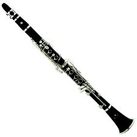
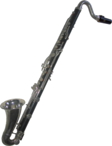

B-Flat Wind Instruments
Soprano Clarinet
The most common version of the soprano clarinet is the B-flat clarinet, but there are also A, C, E-flat, G and D versions.
Bass Clarinet
Soprano Saxophone
The most common version of the soprano saxaphone is in B-flat, but there is also a C version.